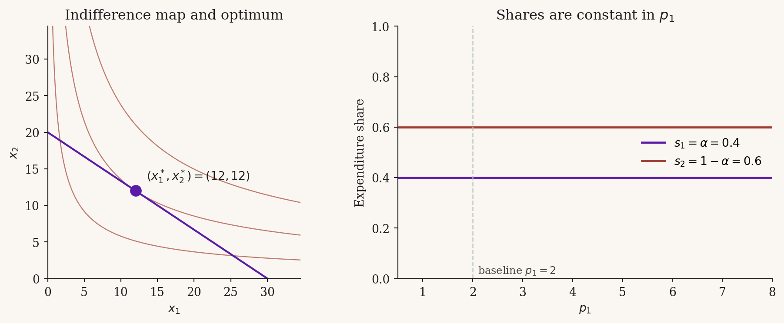

Cobb-Douglas
A consumer chooses a bundle \((x_1, x_2) \in \mathbb{R}^2_{+}\) of two goods to maximise utility subject to a budget constraint. Cobb-Douglas preferences are the workhorse interior-solution case: smooth indifference curves, a unique tangency, and demands that are linear in income and unit-elastic in own price. The defining oddity — and the pedagogical payoff of this module — is that the expenditure share on each good is constant across all prices and incomes. This module derives Marshallian demand, traces the comparative statics, and works through one numerical example.
The model
NoteDefinition: Cobb-Douglas utility
Goods \(1\) and \(2\) have Cobb-Douglas preferences if they are represented by \[ u(x_1, x_2) = x_1^{\alpha} \, x_2^{1 - \alpha}, \qquad \alpha \in (0, 1). \] The marginal rate of substitution is \(\mathrm{MRS} = \dfrac{\alpha}{1 - \alpha} \cdot \dfrac{x_2}{x_1}\), decreasing in \(x_1\) along any indifference curve.
The consumer’s problem is \[ \max_{(x_1, x_2) \in \mathbb{R}^2_{+}} \; x_1^{\alpha} x_2^{1 - \alpha} \quad \text{s.t.} \quad p_1 x_1 + p_2 x_2 \le m, \tag{1}\] with \(p_1, p_2 > 0\) and \(m > 0\).
Unlike the perfect-substitutes case, the indifference curves are strictly convex, so any optimum is unique. The Inada conditions \(\lim_{x_i \to 0} \partial u / \partial x_i = \infty\) rule out corner solutions: the optimum is always interior. Marshallian demand is therefore a function, not just a correspondence as in Perfect Substitutes. The Lagrangian works cleanly here.
Solving the problem
At an interior optimum, the indifference curve is tangent to the budget line: the marginal rate of substitution equals the price ratio, and the budget binds. These two conditions pin down a unique \((x_1^*, x_2^*)\).
ImportantProposition: Marshallian demand
The Marshallian demands for the Cobb-Douglas problem are \[ x_1^*(p_1, p_2, m) = \frac{\alpha \, m}{p_1}, \qquad x_2^*(p_1, p_2, m) = \frac{(1 - \alpha) \, m}{p_2}. \tag{2}\] The corresponding indirect utility is \[ v(p_1, p_2, m) = \alpha^{\alpha} (1 - \alpha)^{1 - \alpha} \cdot \frac{m}{p_1^{\alpha} \, p_2^{1 - \alpha}}. \tag{3}\]
TipProof sketch
By the Inada condition, the optimum is interior, so the boundary constraints \(x_1, x_2 \ge 0\) are slack and we can apply the Lagrangian with just the budget constraint. The Lagrangian is \[ \mathcal{L}(x_1, x_2, \lambda) = x_1^{\alpha} x_2^{1 - \alpha} - \lambda \, (p_1 x_1 + p_2 x_2 - m). \]
The first-order conditions are \[ \alpha \, x_1^{\alpha - 1} x_2^{1 - \alpha} = \lambda \, p_1, \qquad (1 - \alpha) \, x_1^{\alpha} x_2^{-\alpha} = \lambda \, p_2. \] Dividing the first by the second eliminates \(\lambda\) and gives the tangency condition \[ \frac{\alpha}{1 - \alpha} \cdot \frac{x_2}{x_1} = \frac{p_1}{p_2} \quad \Longleftrightarrow \quad p_2 x_2 = \frac{1 - \alpha}{\alpha} \, p_1 x_1. \] Substituting into the budget constraint \(p_1 x_1 + p_2 x_2 = m\) yields \(p_1 x_1 = \alpha m\), hence \(x_1^* = \alpha m / p_1\). Symmetrically \(x_2^* = (1 - \alpha) m / p_2\). Plugging back into \(u\) gives the indirect utility Equation 3.
A direct corollary, sometimes more useful than the demand itself:
The consumer spends a fixed fraction \(\alpha\) of income on good 1 and \(1 - \alpha\) on good 2, regardless of prices.
Comparative statics
Equation Equation 2 makes the comparative statics immediate. Take logs: \[ \log x_1^* = \log \alpha + \log m - \log p_1. \]
Own-price elasticity. \(\dfrac{\partial \log x_1^*}{\partial \log p_1} = -1\). Cobb-Douglas demand is unit-elastic in own price: a \(1\%\) increase in \(p_1\) lowers \(x_1^*\) by exactly \(1\%\).
Cross-price elasticity. \(\dfrac{\partial \log x_1^*}{\partial \log p_2} = 0\). The demand for good 1 does not respond to the price of good 2 at all. Goods are neither substitutes nor complements in the Marshallian sense — they are independent in demand.
Income elasticity. \(\dfrac{\partial \log x_1^*}{\partial \log m} = 1\). Both goods are normal and the Engel curve is a ray through the origin; doubling income exactly doubles demand for each good.
Expenditure shares. From Equation 4, the share of income spent on good 1 is \[ s_1 = \frac{p_1 x_1^*}{m} = \alpha, \] independent of \((p_1, p_2, m)\). This is the right-panel picture in Section 5.
WarningA knife-edge property
The constancy of expenditure shares is a special feature of Cobb-Douglas, not a general property of well-behaved preferences. The CES family with elasticity of substitution \(\sigma \ne 1\) produces shares that vary with the price ratio (rising in \(p_1\) if \(\sigma < 1\), falling if \(\sigma > 1\)). Cobb-Douglas is the \(\sigma = 1\) knife-edge. Students who internalise “shares are constant” as a general rule will get the wrong answer the first time they see CES.
Worked example
Take \(\alpha = 0.4\), \(p_1 = 2\), \(p_2 = 3\), \(m = 60\).
Marshallian demand: \[ x_1^* = \frac{0.4 \times 60}{2} = 12, \qquad x_2^* = \frac{0.6 \times 60}{3} = 12. \]
Expenditure on each good: \[ p_1 x_1^* = 24 = 0.4 \times 60, \qquad p_2 x_2^* = 36 = 0.6 \times 60. \]
Indirect utility: \[v = 0.4^{0.4} \cdot 0.6^{0.6} \cdot \frac{60}{2^{0.4} \, 3^{0.6}} \approx 0.5101 \cdot \frac{60}{2.5510} \approx 12.00.\]
Now raise \(p_1\) from \(2\) to \(4\), holding everything else fixed: \[ x_1^* = \frac{0.4 \times 60}{4} = 6, \qquad x_2^* = 12 \text{ (unchanged)}. \]
Good 1’s quantity halved (own-price elasticity \(-1\)), good 2’s quantity didn’t move (cross-price elasticity \(0\)). Expenditure shares are still \((0.4, 0.6)\).
The geometry of the indifference map plus budget line, and the expenditure-share picture as \(p_1\) varies, is in Section 5.
Figure
Exercises
NoteExercise 1
Let \(\alpha = 1/3\), \(p_1 = 4\), \(p_2 = 2\), \(m = 120\). Compute the Marshallian demand \((x_1^*, x_2^*)\) and the indirect utility \(v(p_1, p_2, m)\). Verify that the expenditure shares are \(1/3\) and \(2/3\).
TipSolution
By Equation 2, \[ x_1^* = \frac{\alpha m}{p_1} = \frac{(1/3) \cdot 120}{4} = 10, \qquad x_2^* = \frac{(1 - \alpha) m}{p_2} = \frac{(2/3) \cdot 120}{2} = 40. \] Expenditure: \(p_1 x_1^* = 40 = (1/3) \cdot 120\) and \(p_2 x_2^* = 80 = (2/3) \cdot 120\), so shares are \(1/3\) and \(2/3\) as predicted by Equation 4.
By Equation 3, \[ v = (1/3)^{1/3} (2/3)^{2/3} \cdot \frac{120}{4^{1/3} \cdot 2^{2/3}} = (1/3)^{1/3} (2/3)^{2/3} \cdot \frac{120}{2^{4/3}} \] which simplifies to \(v \approx 0.5291 \cdot 47.622 \approx 25.20\).
NoteExercise 2
Prove that the expenditure share on good 1 is \(\alpha\) for all \((p_1, p_2, m) \in \mathbb{R}^3_{++}\). Then show that this property fails for quasi-linear preferences \(u(x_1, x_2) = \log x_1 + x_2\): derive the demand for good 1 and the expenditure share, and explain why the share moves with \((p_1, m)\).
TipSolution
Cobb-Douglas. From Equation 2, \(p_1 x_1^* = p_1 \cdot \alpha m / p_1 = \alpha m\), so \(s_1 = p_1 x_1^* / m = \alpha\). No dependence on \((p_1, p_2, m)\).
Quasi-linear. With \(u = \log x_1 + x_2\), the tangency condition is \(1 / x_1 = p_1 / p_2\), giving \(x_1^* = p_2 / p_1\) as long as \(m \ge p_2\) (so \(x_2^* \ge 0\)). Expenditure on good 1 is \(p_1 x_1^* = p_2\), a constant in currency, not a share. The share is \[ s_1 = \frac{p_2}{m}, \] which falls as income rises (good 1 is a necessity in the quasi-linear sense) and rises with \(p_2\). Constant share is special to CD; constant expenditure is the analogous property of quasi-linear preferences. Different invariants for different utility families — easy to conflate.
NoteExercise 3
The constant elasticity of substitution (CES) utility function with parameter \(\rho \in (-\infty, 1) \setminus \{0\}\) is \[ u_{\rho}(x_1, x_2) = \bigl(\alpha \, x_1^{\rho} + (1 - \alpha) \, x_2^{\rho}\bigr)^{1/\rho}, \] with elasticity of substitution \(\sigma = 1/(1 - \rho)\).
Take logs of \(u_{\rho}\) and show, using L’Hôpital’s rule, that as \(\rho \to 0\), \[ \log u_{\rho}(x_1, x_2) \;\longrightarrow\; \alpha \log x_1 + (1 - \alpha) \log x_2. \]
Conclude that, in the \(\rho \to 0\) limit (equivalently \(\sigma \to 1\)), CES preferences agree with Cobb-Douglas preferences up to the monotone transformation \(\log\). This is the precise sense in which Cobb-Douglas is the knife-edge \(\sigma = 1\) of the CES family flagged in the Warning above.
TipSolution
Taking logs of \(u_{\rho}\): \[ \log u_{\rho}(x_1, x_2) = \frac{1}{\rho} \, \log\bigl(\alpha \, x_1^{\rho} + (1 - \alpha) \, x_2^{\rho}\bigr). \] As \(\rho \to 0\), both numerator and denominator (of \(\log(\cdot) / \rho\)) tend to \(0\) — the numerator because \(\alpha + (1 - \alpha) = 1\) and \(\log 1 = 0\). Apply L’Hôpital’s rule, differentiating in \(\rho\): \[ \frac{d}{d\rho} \log\bigl(\alpha x_1^{\rho} + (1 - \alpha) x_2^{\rho}\bigr) = \frac{\alpha x_1^{\rho} \log x_1 + (1 - \alpha) x_2^{\rho} \log x_2}{\alpha x_1^{\rho} + (1 - \alpha) x_2^{\rho}}, \] which as \(\rho \to 0\) converges to \[ \frac{\alpha \log x_1 + (1 - \alpha) \log x_2}{\alpha + (1 - \alpha)} = \alpha \log x_1 + (1 - \alpha) \log x_2. \] Hence \(\log u_{\rho} \to \alpha \log x_1 + (1 - \alpha) \log x_2 = \log\bigl(x_1^{\alpha} x_2^{1 - \alpha}\bigr)\), which is a monotone transformation of Cobb-Douglas utility. Since preferences are invariant to monotone transformations of utility, the limiting preferences are Cobb-Douglas.
The CES family interpolates between Leontief (perfect complements, \(\sigma \to 0\), \(\rho \to -\infty\)), Cobb-Douglas (\(\sigma = 1\), \(\rho \to 0\)), and Perfect Substitutes (\(\sigma \to \infty\), \(\rho = 1\)). Cobb-Douglas sits at the centre. The constancy of expenditure shares fails on either side of \(\sigma = 1\).
References
- Mas-Colell, Whinston, Green. Microeconomic Theory, Section 3.D.
- Varian. Microeconomic Analysis, Chapter 7.
- Jehle and Reny. Advanced Microeconomic Theory, Section 1.4 (Cobb-Douglas as a worked example throughout).